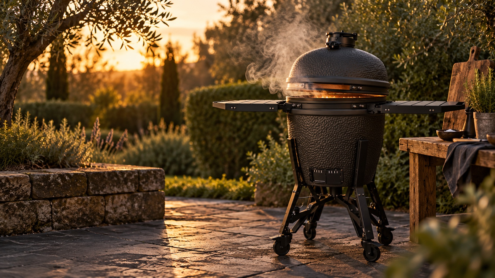

RECEPTEN VOOR DE BASTARD VX LARGE
Van kolen
tot bord.
70 recepten voor de kamado: van snelle grillgerechten tot slow cooks die de hele middag mogen duren.
Bekijk de recepten ↓WAT GAAT ER OP HET VUUR?
Jouw receptenboek
KEN JE VUUR
Rust in de kamado. Smaak op je bord.
01 / Lucht is je gaspedaal
Verwijder koude as vóór het aansteken. Regel de grove luchttoevoer onderaan en stuur bovenaan bij met kleine bewegingen. Wacht circa 5 minuten voor de volgende aanpassing. Wind en brandstof maken vaste schuifstanden onbetrouwbaar.
02 / Temperatuur vóór tijd
BBQ-temperaturen zijn koepelrichtwaarden. Meet de kern in het dikste deel, weg van bot. Tijden zijn indicaties en exclusief aansteken, tenzij anders vermeld. Meer porties kunnen meerdere rondes vragen.
03 / Open met aandacht
Open het deksel eerst een paar centimeter en dan rustig verder. Gebruik hittebestendige handschoenen. Kook uitsluitend buiten en volg de handleiding van jouw VX Large en accessoires.
Bronnen, opslag en offline gebruik
Dit is een onafhankelijke, persoonlijke selectie, geen officiële The Bastard-app of objectieve ranglijst. De recepten zijn eigen, vereenvoudigde varianten op de gelinkte inspiratiebronnen, geraadpleegd op 24 oktober 2026. Ook technieken en recepten van Steven Raichlen en Meathead dienden als inspiratie.
Favorieten, personen en vinkjes blijven in deze browser. Er is geen account of synchronisatie. Na een eerste volledige online opening via HTTPS zijn de app en recepten offline beschikbaar. Gerechtfoto’s worden lokaal bewaard zodra ze online in beeld zijn geweest; andere foto’s kunnen offline ontbreken. De beelden zijn sfeerfoto’s, met credits bij elk recept en in het foto-overzicht. Je browser kan opslag later wissen. Externe bronlinks werken alleen online.
Bastard basisgids (algemene luchtregeling) · USDA kerntemperaturen
Houd rauwe en gare producten gescheiden. Kip: 75 °C; vis: 63 °C; hele stukken rund/varken: minimaal 63 °C met 3 minuten rust. Pulled pork gaart langer voor malsheid. Controleer etiketten op allergenen.